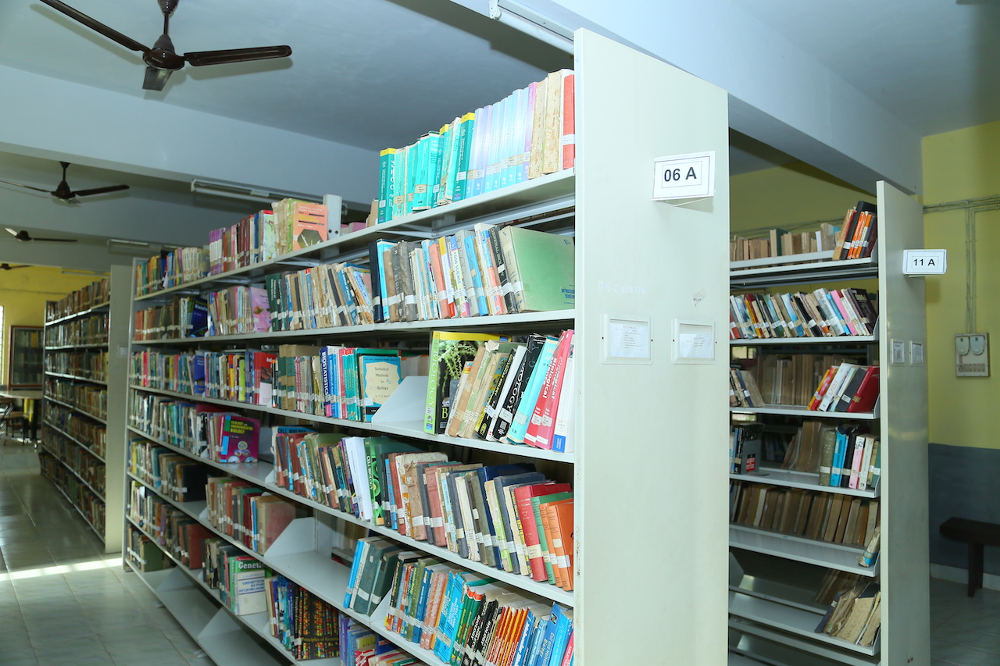

Library |
|
Libraries provide the crucial role in promoting education, research,
personality development, ethics and other important values. A society cannot flourish without proper
education and the primary requirement of the education system is the knowledge available in the books.
By providing access to a wide range of materials, the library facilitates intellectual growth and encourages lifelong learning. Enhance Understanding of Subjects: An objective of the college library is to enhance students' understanding of various subjects or disciplines. The aims and objectives of a college library are vital in fulfilling its role as a valuable resource center within the institution. With a focus on supporting educational programs, fostering intellectual growth, and facilitating research, the library aims to provide a rich and diverse collection of materials that go beyond the confines of textbooks. By promoting deep and advanced studies, enhancing understanding across disciplines, and preparing students as responsible citizens, the library plays a crucial role in empowering individuals with knowledge and critical thinking skills. Furthermore, it serves as a hub of information, connecting faculty members with the latest updates in their fields and offering healthy entertainment options for its users. |
|
|
Objectives of library::
|
 |